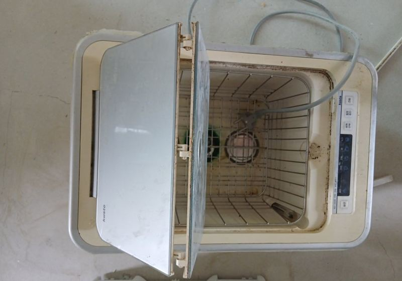
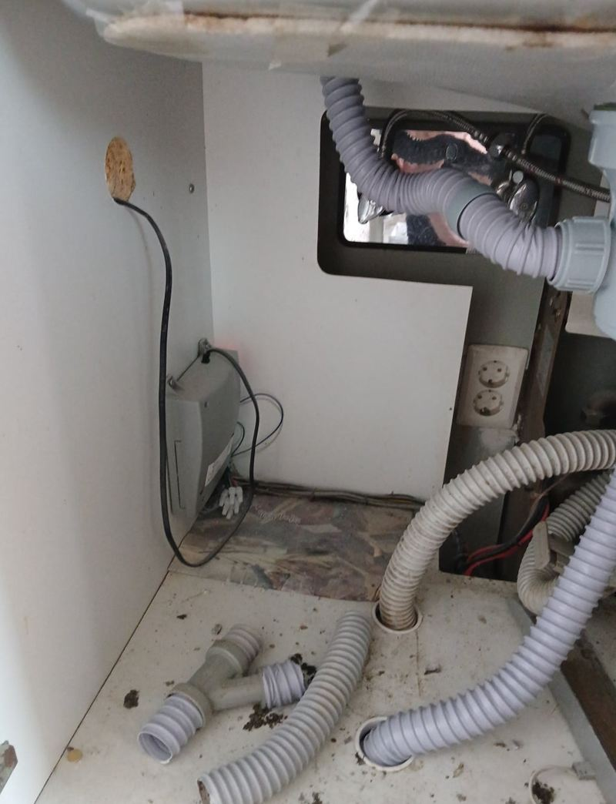
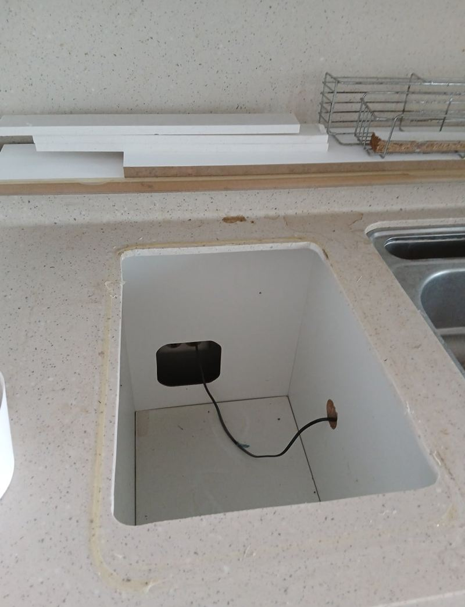
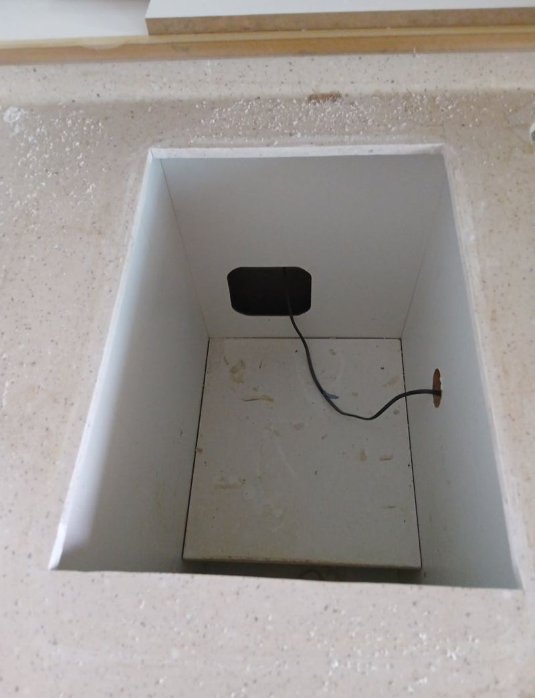
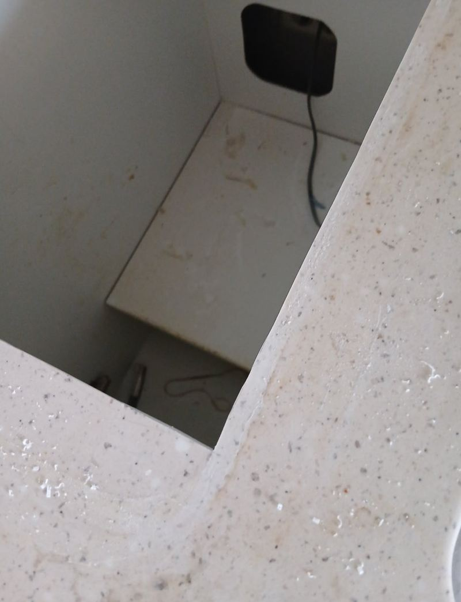
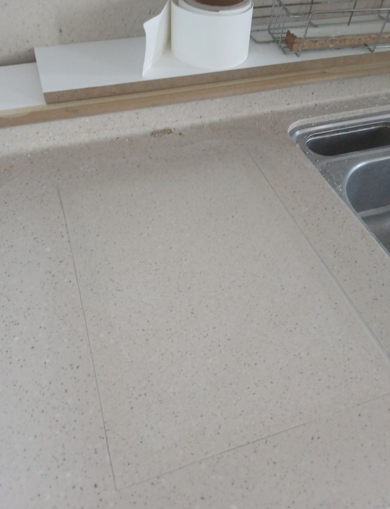

청주 과일세척기 제거 후 싱크대 복원 가능할까
← 밀어서 전후 비교 →
"이사할 집인데 과일세척기는 안 써요. 떼고 나면 생기는 구멍을 메울 수 있을까요?" 청주 오송 아파트 이사를 앞둔 고객분이었어요. 예전 아파트엔 과일세척기가 기본으로 달린 곳이 많은데, 실제로는 거의 안 쓰고 자리만 차지하는 경우가 흔해요. 떼어 낸 뒤 구멍과 배수 라인을 그대로 두면 물이 새고 위생에도 좋지 않아요. 세척기를 떼고 배수관은 싱크대 아래 배관에 바로 이었고, 상판 구멍은 맞춤 대리석 조각으로 메운 뒤 아래에 보강 프레임을 대고 실리콘으로 밀봉했어요.
| 현장 | 청주 흥덕구 오송읍 아파트 주방, 이사 전 |
|---|---|
| 요청 | 안 쓰는 과일세척기 철거, 남는 구멍 복원 |
| 한 일 | 세척기 분해·철거 → 배수관 하부 배관에 직접 연결 → 맞춤 대리석 조각 재단 → 하부 보강 프레임 → 조각 고정 → 실리콘 밀봉 |
| 범위 | 상판 전체 교체 없이 구멍 부분만 |
떼고 나면 남는 구멍, 그냥 두면 안 돼요
과일세척기를 떼면 상판에 네모난 큰 구멍이 남고, 아래에는 세척기로 가던 배수관이 덩그러니 남아요. 뚜껑만 덮어 두면 틈으로 물이 스며 하부장이 젖고, 배수관 끝으로 냄새가 올라와요. 그래서 위는 막고 아래는 정리하는 두 가지를 함께 해야 해요.


철거와 복원 순서
세척기 분해·철거
상판 가장자리가 깨지지 않게 고정부를 풀고 조심스럽게 들어냈어요.


배수관 정리
세척기로 가던 배수관은 싱크대 아래 배관에 바로 이어 새는 곳 없이 마감했어요.
대리석 조각과 보강
구멍 크기에 맞춰 대리석 조각을 재단하고, 무게가 실리는 자리라 아래에 보강 프레임을 대서 처지거나 금이 가지 않게 했어요.

실리콘 밀봉
조각과 상판 사이를 실리콘으로 메워 물기와 때가 들어가지 않게 막았어요.

티 나지 않게 메우려면
복원한 자리가 덜 보이려면 색, 두께, 무늬가 비슷한 대리석을 써야 해요. 구멍 크기를 정확히 재서 조각을 맞추면 틈이 가늘어지고, 실리콘 선도 얇게 떨어져요. 이 현장도 색 톤을 맞춰 이질감을 줄였어요.
상판 전체를 바꾸는 것보다 범위가 작아 시간과 비용이 덜 들어요. 이사 전처럼 일정이 빠듯할 때 특히 좋아요. 부동산에서 소개를 받고 연락하셨다는 고객분은 "새 싱크대처럼 만들어 줘서 고맙다"고 하셨어요.
이럴 때 복원을 생각해 보세요
- 이사 전 정리안 쓰는 세척기를 떼고 조리대를 넓게 쓰고 싶을 때
- 고장 난 세척기고쳐 쓸 생각이 없고 자리만 차지할 때
- 주변 누수·곰팡이세척기 테두리로 물이 새 하부장이 상했을 때
- 작은 주방조리 공간이 부족해 상판을 넓혀야 할 때
이사 전 짧은 일정에 맞추려면
이사 날짜가 정해져 있으면 철거와 복원을 짐이 들어오기 전에 끝내는 게 좋아요. 실리콘과 접착제가 굳는 동안은 상판에 물건을 올리지 않아야 해서, 입주 전날이나 며칠 전에 일정을 잡으면 마음이 편해요.
상판 색과 맞는 대리석을 준비해야 해서 사진으로 먼저 색과 무늬를 확인해요. 구멍의 가로·세로 크기와 상판 두께를 재 두시면 준비가 빨라요.
과일세척기 철거 질문
음식물 처리기 구멍도 메울 수 있나요?
같은 방법으로 조각을 맞춰 메울 수 있어요. 구멍 크기를 알려주세요.
대리석 조각은 어디서 구하나요?
상판 색에 맞는 자재를 준비해 와요. 남은 자투리가 있으면 그걸 쓰기도 해요.
메운 자리에 무거운 걸 올려도 되나요?
아래 보강을 해서 일반 사용은 괜찮아요. 아주 무거운 물건은 피해 주세요.
세척기 전원선은 어떻게 하나요?
하부장 안에서 안전하게 정리해요. 다른 가전에 쓸 수 있게 남겨 두기도 해요.
지방도 오시나요?
청주처럼 수도권 밖도 일정을 맞춰 가요. 먼저 사진으로 상담해요.
세척기를 다른 자리에 옮겨 달 수 있나요?
상판 구조에 따라 가능해요. 새 자리 구멍과 배수 동선을 같이 봐요.
다른 상판 복원 현장
세척기 자리와 하부장 안쪽 사진을 보내 주세요.
전화 상담 010-4517-9872